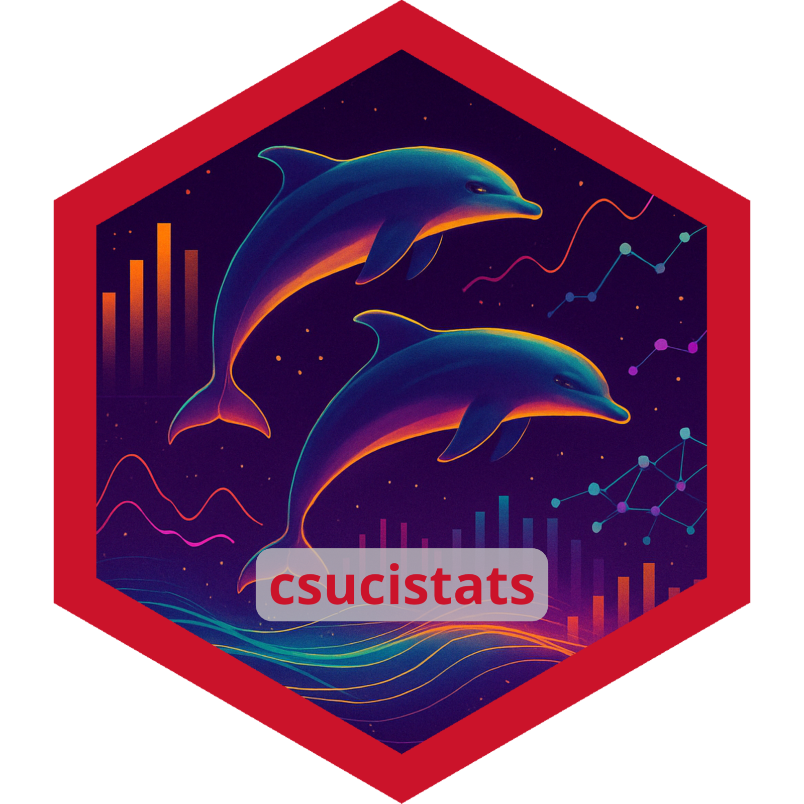

Unicorn Data
unicorn_data.RdA simulated dataset about unicorns used for teaching purposes.
Format
A data frame with 750 rows and 15 variables:
- Unicorn_ID
A unique id number
- Age
age in years
- Gender
The gender of the unicorn (Female, Male, Non-Binary, Genderfluid, Agender)
- Color
Color (White, Black, Gray, Brown, Pink, Gold, Silver
- Type_of_Unicorn
What type of unicorn is it? (Rainbow, Jewel, Ember, Ruvas)
- Type_of_Horn
What type of horn is it? (Opal or Aquamarine)
- Horn_Length
Length of the horn (inches)
- Horn_Strength
Strength of the Horn (pascals)
- Weight
Weight in pounds
- Health_Score
Unicorn's overal health (1-10)
- Personality_Score
How Personal is the unicorn?
- Magical_Score
How magical is the unicorn?
- Elusiveness_Score
How elusive is the unicorn?
- Gentleness_Score
How gentle is the unicorn?
- Nature_Score
How connected to nature is the unicorn?